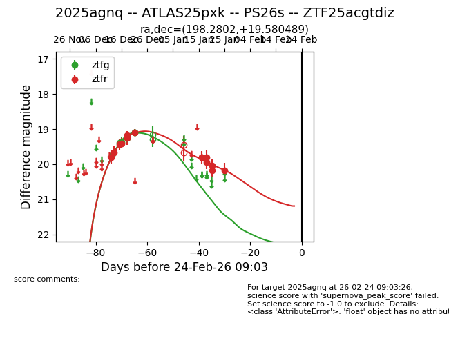
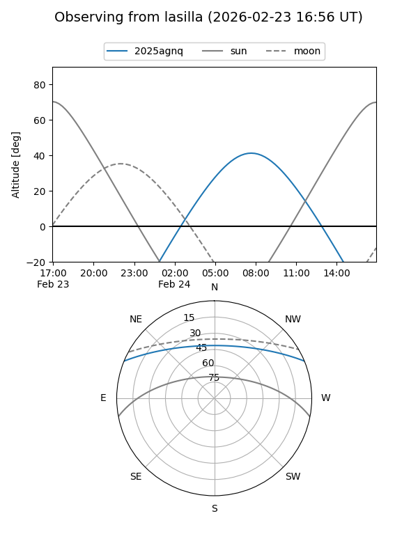
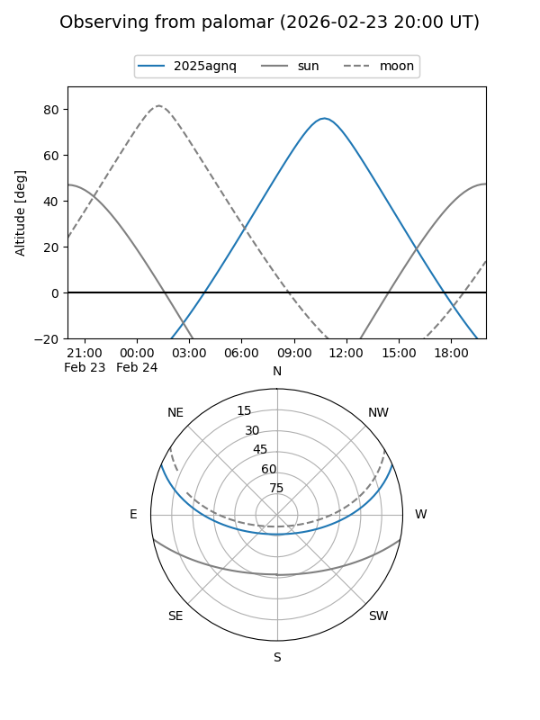

2025agnq
Target 2025agnq at 2025-12-31 18:00
Aliases and brokers:
FINK: link
Lasair: link
ALeRCE: link
TNS: link
YSE: link
alt names
ZTF25acgtdiz (ztf,fink_ztf)
2025agnq (tns,yse)
Coordinates:
equatorial (ra, dec) = 198.2802,+19.58049
equatorial (HMS+DMS) = 13:13:07.24,+19:34:49.76
galactic (l, b) = (337.4467,+80.96251)
Flags:
Photometry:
last ztfg=19.09, ztfr=19.10
7 ztfg, 7 ztfr detections
Lightcurve

Visibility


Additional plots